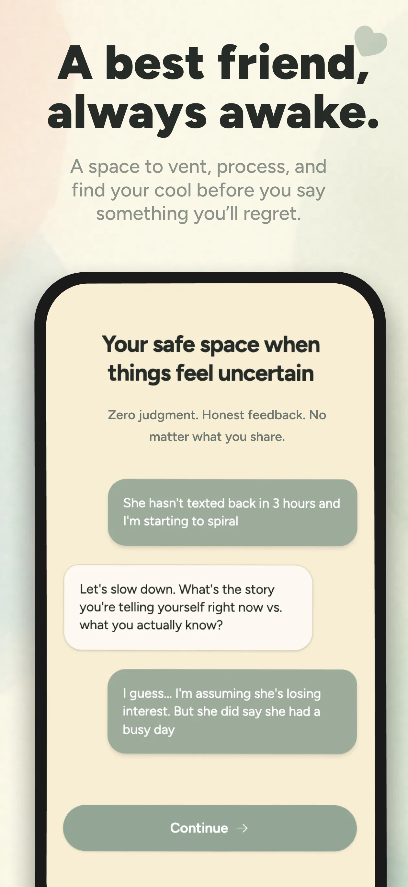
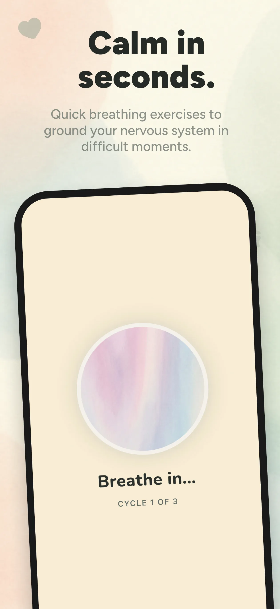
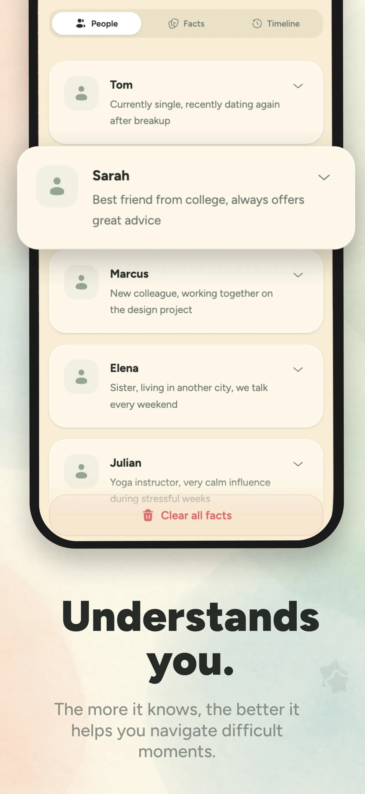
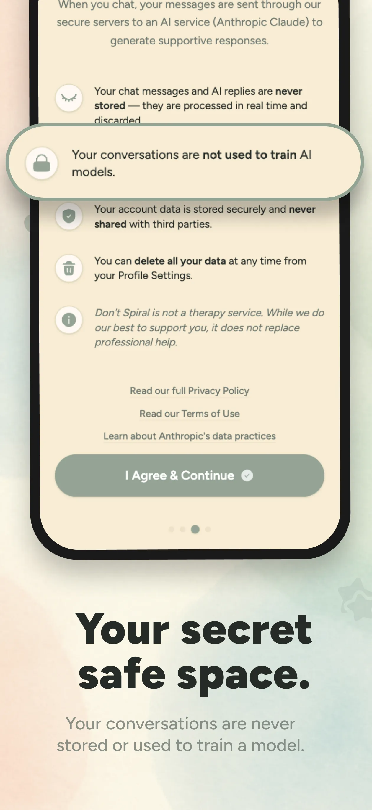
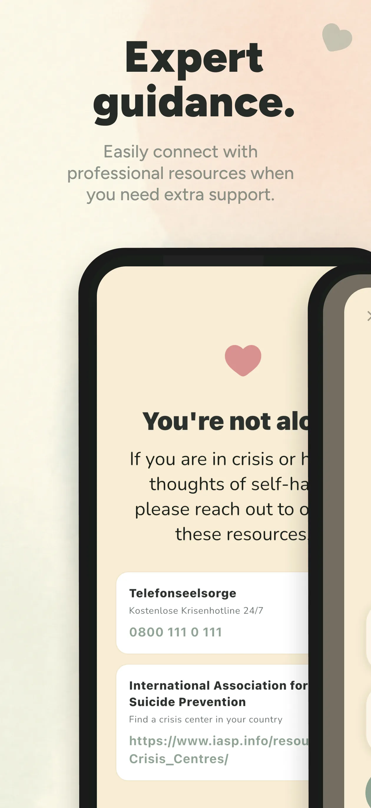
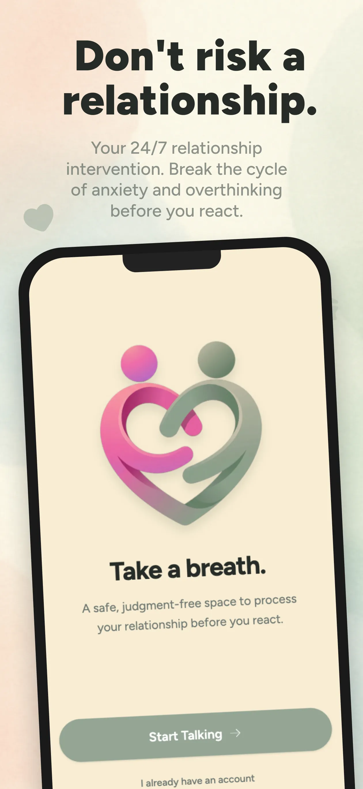
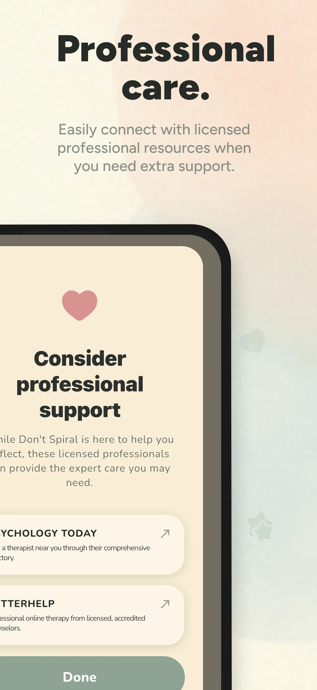

Take a breath.
A safe, judgment-free space to sort through your feelings before you react. Available 24/7 when the spiral hits.
Free on iOS and Android. No credit card required.
Your conversations are never stored and never used to train AI.
You really need to talk?
Available 24/7. Your conversations stay private.
"I can't stop checking my phone."
"What if they don't actually love me?"
"I shouldn't have sent that text."
Sound familiar? Relationship anxiety can feel all-consuming. The constant doubts, the spiraling thoughts, the urge to seek reassurance. Don't Spiral is here for those moments — not tomorrow, not next week, right now.
A best friend, always awake.
A space to vent, process, and find your cool before you say something you'll regret. Zero judgment. Honest feedback. No matter what you share.

Calm in seconds.
Quick breathing exercises to ground your nervous system in difficult moments. When the panic hits, this is your first stop.

Understands you.
The more it knows about your life and relationships, the better it helps you navigate difficult moments. It remembers your story, so you don't have to explain from scratch every time.

Your secret safe space.
Your conversations are never stored or used to train a model. We built this to help you, not to harvest your most vulnerable moments.

Expert guidance.
Easily connect with professional resources when you need extra support. Crisis hotlines and licensed therapist directories, one tap away.

How it works
Download
Free on iOS and Android. No credit card required.
Talk it out
Tell it what's on your mind. Vent, ask questions, or just say what you're feeling.
Find clarity
Get honest feedback and grounding techniques before you react.
Private by design.
Conversations never stored
Messages are processed in real time and discarded. Nothing is saved on our servers.
Not used to train AI
Anthropic's zero-retention API means your words are never used to train models.
GDPR compliant
Data stored on EU servers in Helsinki. Full GDPR compliance.
Delete anytime
One tap to permanently erase your account and all associated data.
Ethical by design
No "we miss you" notifications. No exploiting your distress for retention. Built to help, not to hook.
No ads. No data selling.
Your data exists solely to help you. We don't sell it, share it, or monetize it.
Not therapy. Something different.
Don't Spiral isn't a therapist, and it doesn't pretend to be. Think of it as the friend who stays up with you at 3am — who won't let you send that text, who helps you separate what you're feeling from what's actually happening.
Built by someone who's been in the spiral. Designed to help you get out.


Ready to stop spiraling?
Free to download.
Free on iOS and Android. No credit card required.
Your conversations are never stored and never used to train AI.